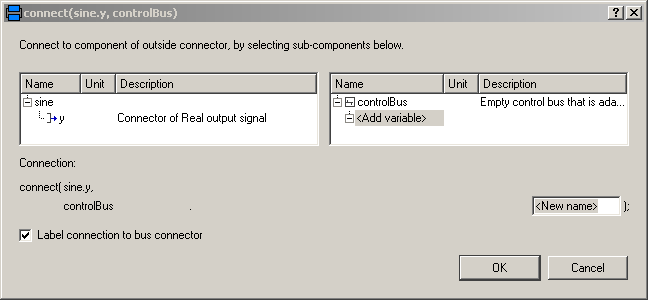
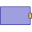

BusUsageDemonstrates the usage of a signal bus |
|
Diagram

Information
This information is part of the Modelica Standard Library maintained by the Modelica Association.
Signal bus concept
In technical systems, such as vehicles, robots or satellites, many signals are exchanged between components. In a simulation system, these signals are usually modelled by signal connections of input/output blocks. Unfortunately, the signal connection structure may become very complicated, especially for hierarchical models.
The same is also true for real technical systems. To reduce complexity and get higher flexibility, many technical systems use data buses to exchange data between components. For the same reasons, it is often better to use a "signal bus" concept also in a Modelica model. This is demonstrated at hand of this model (Modelica.Blocks.Examples.BusUsage):

- Connector instance "controlBus" is a hierarchical connector that is used to exchange signals between different components. It is defined as "expandable connector" in order that no central definition of the connector is needed but is automatically constructed by the signals connected to it (see also Section 9.1.3 (Expandable Connectors) of the Modelica 3.4 specification).
- Input/output signals can be directly connected to the "controlBus".
- A component, such as "part", can be directly connected to the "controlBus", provided it has also a bus connector, or the "part" connector is a sub-connector contained in the "controlBus".
The control and sub-control bus icons are provided within Modelica.Icons. In Modelica.Blocks.Examples.BusUsage_Utilities.Interfaces the buses for this example are defined. Both the "ControlBus" and the "SubControlBus" are expandable connectors that do not define any variable. For example, Interfaces.ControlBus is defined as:
expandable connector ControlBus
extends Modelica.Icons.ControlBus;
annotation ();
end ControlBus;
Note, the "annotation" in the connector is important since the color and thickness of a connector line are taken from the first line element in the icon annotation of a connector class. Above, a small rectangle in the color of the bus is defined (and therefore this rectangle is not visible). As a result, when connecting from an instance of this connector to another connector instance, the connecting line has the color of the "ControlBus" with double width (due to "thickness=0.5").
An expandable connector is a connector where the content of the connector is constructed by the variables connected to instances of this connector. For example, if "sine.y" is connected to the "controlBus", a pop-up menu may appear:
The "Add variable/New name" field allows the user to define the name of the signal on the "controlBus". When typing "realSignal1" as "New name", a connection of the form:
connect(sine.y, controlBus.realSignal1)
is generated and the "controlBus" contains the new signal "realSignal1". Modelica tools may give more support in order to list potential signals for a connection. Therefore, in BusUsage_Utilities.Interfaces the expected implementation of the "ControlBus" and of the "SubControlBus" are given. For example "Internal.ControlBus" is defined as:
expandable connector StandardControlBus extends BusUsage_Utilities.Interfaces.ControlBus; import Modelica.Units.SI; SI.AngularVelocity realSignal1 "First Real signal"; SI.Velocity realSignal2 "Second Real signal"; Integer integerSignal "Integer signal"; Boolean booleanSignal "Boolean signal"; StandardSubControlBus subControlBus "Combined signal"; end StandardControlBus;
Consequently, when connecting now from "sine.y" to "controlBus", the menu looks differently:

Note, even if the signals from "Internal.StandardControlBus" are listed, these are just potential signals. The user might still add different signal names.
Components (5)
| integerStep |
Type: IntegerStep |
|
|---|---|---|
| booleanStep |
Type: BooleanStep |
|
| sine |
Type: Sine |
|
|  | part |
Type: Part |
| gain |
Type: Gain |